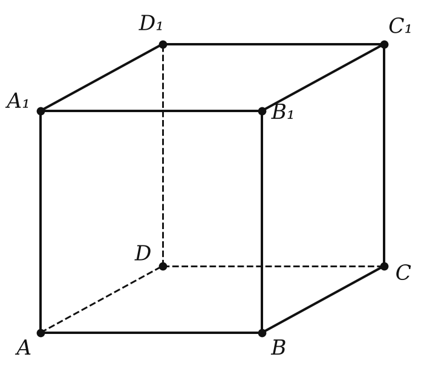

Рабочий лист · урок 5
Тетраэдр, параллелепипед и сечения
ИмяДата
1Вспомни и допиши
- Тетраэдр имеет грани, рёбер и вершины.
- Параллелепипед имеет граней, рёбер, вершин и диагонали.
- Диагонали параллелепипеда пересекаются в одной точке и .
- Сечением тетраэдра может быть только или .
- Если секущая плоскость пересекает две противоположные грани параллелепипеда, то отрезки сечения на них .
2Верно или неверно?
| Сечением тетраэдра может быть пятиугольник. | В / Н |
| Сечением куба может быть шестиугольник. | В / Н |
| Противоположные рёбра тетраэдра скрещиваются. | В / Н |
| Все диагонали любого параллелепипеда равны. | В / Н |
| Точки сечения из соседних граней можно соединять напрямую. | В / Н |
3Работаем по чертежу

- M, N, K — середины AA₁, BB₁, CC₁. Постройте сечение плоскостью MNK и определите его вид.
- Ребро куба 4. Постройте сечение плоскостью BDC₁; найдите его периметр и площадь.
4Реши
- В тетраэдре DABC точка M — середина DA, N — середина DB, точка K на ребре DC, DK : KC = 1 : 2. Постройте сечение плоскостью MNK и точку X пересечения прямой MK с плоскостью ABC.
- Ребро куба ABCDA₁B₁C₁D₁ равно 4; P, Q, R — середины AB, AD, CC₁. Постройте сечение плоскостью PQR. Какой многоугольник получился? Найдите BS, где S — точка сечения на ребре BB₁.